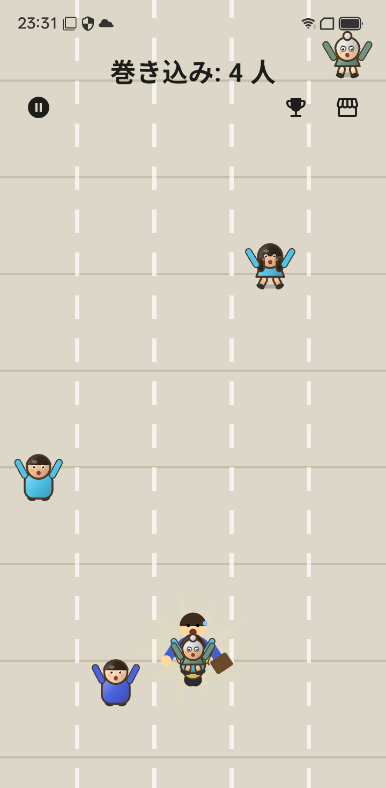
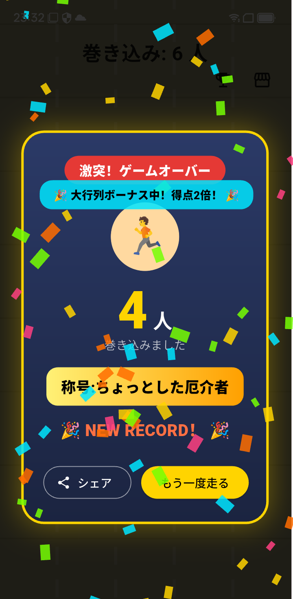
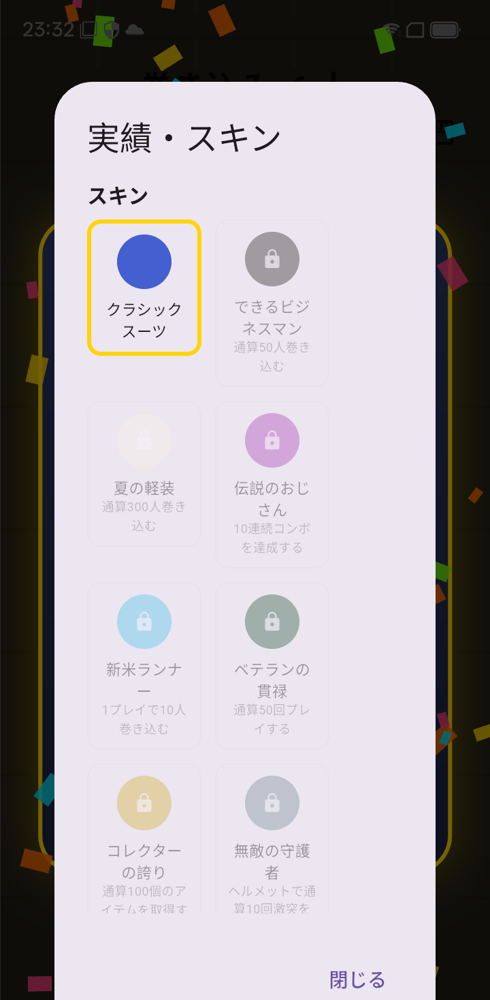
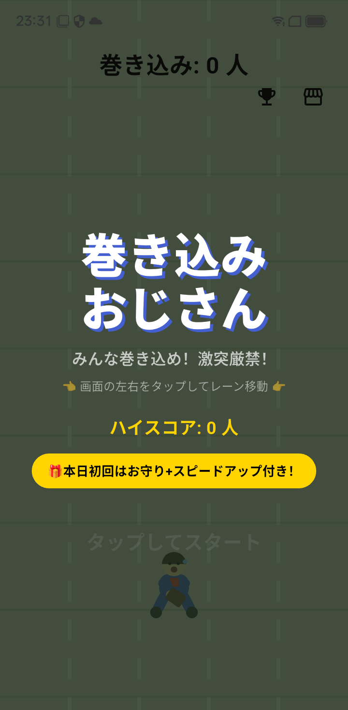

STEAM BASE
STEAM BASE巻き込みおじさん
カジュアルアクションCasual action全力疾走するスーツのおじさんで、通行人をどんどん巻き込んで行列を伸ばすカジュアルアクション。A suited man sprints down the street — tap to switch lanes, sweep up passers-by and grow the line.

スクリーンショットScreenshots




プレイ動画Gameplay video
巻き込みおじさん はどんなゲーム?What is 巻き込みおじさん?
スーツ姿のおじさんが、なぜか全力疾走。 左右をタップしてレーンを移動し、道行く人をどんどん巻き込め！ 気づけば後ろには長蛇の行列……でも電柱や障害物にぶつかったら一巻の終わり。
あそびかた
- 画面の左右をタップしておじさんをレーン移動
- 通行人にぶつかると仲間になって行列に加わる(得点アップ)
- 障害物(コーン・看板・電柱)にぶつかるとゲームオーバー
- 巻き込んだ仲間が障害物に当たると、その人だけ行列から脱落(減点)
ボーナスアイテム
- お宝:取ると即座にスコアアップ
- 栄養ドリンク:一時的にスピードアップ
- 磁石:一時的に周囲の通行人を自動で巻き込む
- ヘルメット:次の1回だけ障害物への激突を無効化
10人ごとに称号が輝かしく表示され、SNSでの自慢にも使えるかも? 「町内ちょっとした有名人」から「世紀の巻き込みマスター」まで、 一体どこまで巻き込めるか挑戦してみてください。
完全無料でプレイでき、広告を削除する買い切りアイテムもご用意しています。
こんな方におすすめ
- ちょっとした待ち時間に遊べる暇つぶしゲームを探している
- くだらないバカゲーで笑いたい
- タップだけのシンプルなランゲームが好き
- ハイスコアや称号を友だちに自慢したい
A man in a suit is inexplicably sprinting at full speed. Tap left and right to move him between lanes and pick up passersby! Before you know it, a long line has formed behind him... but crashing into a lamppost or obstacle means game over.
[How to Play]
- Tap left and right of the screen to move the man between lanes
- Bumping into passersby makes them allies and adds them to the line (increases your score)
- Hitting obstacles (cones, signs, lampposts) results in a game over
- If an ally hits an obstacle, that person is removed from the line (points deducted)
[Bonus Items]
- Treasure: Instantly increases your score
- Energy Drink: Temporarily increases your speed
- Magnet: Temporarily automatically picks up nearby passersby
- Helmet: Prevents collisions with obstacles for the next time only
A title is displayed brilliantly every 10 people, which you might even use to brag on social media! From "A Little Local Celebrity" to "The Master of Picking Up People," see how far you can pick up!
It's completely free to play, and we also offer a one-time purchase option to remove ads.
Recommended for those who:
- Are looking for a time-killing game to play during short waiting times
- Want to laugh at a silly, goofy game
- Like simple tap-only running games
- Want to show off their high scores and titles to their friends
よくある質問FAQ
無料で遊べますか?Is it free?
完全無料で遊べます。広告を削除する買い切りアイテムもあります。Yes, completely. A one-time purchase removes ads.
どんな操作ですか?How do the controls work?
画面の左右をタップしてレーンを移動するだけです。Just tap the left or right side of the screen to change lanes.
iPhone（iOS）でも遊べますか?Is it on iPhone (iOS)?
現在は Android 版（Google Play）のみです。App Store（iOS）では配信していません。Not at the moment — it is only on Android (Google Play), not on the App Store.